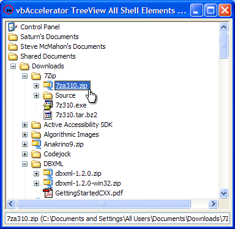

VB5 TreeView Shell Samples (41K)
VB5 TreeView Shell Samples (41K)
 VB6 TreeView Shell Samples (39K)
VB6 TreeView Shell Samples (39K)
 16 Apr 2004
16 Apr 2004
First Posted
 vbAccelerator TreeView Control
vbAccelerator TreeView Control
 Using the System Image List with (and without) vbAccelerator Controls
Using the System Image List with (and without) vbAccelerator Controls

Displaying Shell Elements in a TreeView
This article demonstrates a very simple way to populate a TreeView with files and or folders using the Shell Automation Object provided in Shell32.DLL. Using this object in combination with a System Image List allows you to easily provide a browsable view of the file system with correct icons for each element.
About the Shell Automation Object
With version 4.71 of Shell32.DLL, released with IE 4.0 and included in Windows 98/2000 and above Microsoft finally included some methods to make the wilfully obscure Shell API a bit easier to use from higher-level languages. The methods are exposed from a TypeLibrary embedded within Shell32.DLL called "Microsoft Shell Controls and Automation", and include methods for browsing the Shell's namespace as well as performing some common Shell tasks such as launching Control Panel Items, opening the Find dialogs and so on.
To give an example of using the API, here is how you can get a list of all items in My Computer:
Dim shl As New Shell
Dim drives As Folder
Dim driveItem As FolderItem
Set drives = shl.NameSpace(ssfDRIVES)
For Each driveItem In drives.items
Debug.Print driveItem.Name, driveItem.Path
If (driveItem.IsFolder) Then
' You can get the sub items using driveItem.Folder
End If
Next
One thing that is unfortunately missing from this however is a method to get hold of the icon for a given item in the shell.
When using the low-level Shell32 API, the icon for an item in the Shell namespace can always be obtained from it's PIDL, a foolishly named structure that describes a "pointer to an ID List"; an ID list being a structure which effectively represents the path to a folder regardless of whether it is implemented as a physical directory on the file system or whether it is a virtual construct such as "My Computer". In the higher level API the PIDL is not accessible so another route is needed to find the icon. Luckily, for file-system related items this is quite easy to achieve using a System Image List.
Getting the icon for an actual file system item with a normal path is described in the System Image List article, so I won't cover it again here. For items like the Desktop and My Computer, however, you can still retrieve the icon using a path fromt the Shell Automation object because even though these items are virtual, they have another form of path addressing which uses GUIDs to identify an item. This system does not appear to be much documented at MSDN, but here a handful of commonly occuring objects:
| Object | 'Path' |
| My Computer | ::{20D04FE0-3AEA-1069-A2D8-08002B30309D} |
| My Network Places | ::{208D2C60-3AEA-1069-A2D7-08002B30309D} |
| Internet Explorer | ::{871C5380-42A0-1069-A2EA-08002B30309D} |
| Recycle Bin | ::{645FF040-5081-101B-9F08-00AA002F954E} |
These GUID based paths are accepted as if they were filenames by the System Image List, and so you can obtain the correct icons. This means you can create a fairly comprehensive shell object browser using hardly any code.
Populating a Tree With Shell Objects
There are three things you need to be able to do to create a TreeView showing shell objects:
- Associate a System ImageList with the TreeView
- Be able to sort items in a consistent way. If you just show folders then they should be sorted alphabetically, otherwise the items should be sorted alphabetically with folders appearing before files.
- Be able to uniquely identify the file system object that any item in the tree represents. Note that the Shell namespace can include the same folder in more than one place (for example, the Documents folders typically appear under both My Computer and in the Document and Settings folder of the installation drive).
I'll cover these in turn.
Associating a System Image List With the Tree
The easiest way to achieve this is to use the code in the vbAccelerator System Image List class. Here's the code used to set up the ImageList:
Private m_cIml As cVBALSysImageList ... Set m_cIml = New cVBALSysImageList m_cIml.IconSizeX = 16 m_cIml.IconSizeY = 16 m_cIml.Create tvwDirs.ImageList = m_cIml.hIml
With this in place, the icon index for a Tree Node can be obtained from its path using the following code. Note the use of use of the bForceLoadFromDisk to ensure the correct icon is loaded; if you do not specify this then the code assumes the object is of type file and will not work for folders, regardless of whether they are file system or not.
lIconIndex = m_cIml.ItemIndex(item.Path, True)
Sorting Items
There are two potential approaches that could be taken to sorting items: either you could collate all of the items into a temporary array and sort that, or, and more simply use the features of the vbAccelerator TreeView control to do the sorting for you. The latest release of the control offers a range of sorting methods, including an event-driven callback method in which you can code any sorting scheme. In this case, however, items are sorted alphabetically and may need to be sorted into folder/item groups. The easiest way to support this is to use the TreeView node ItemData to encode whether the item is a folder or an item and then use the etvwItemDataThenAlphabetic sorting mode built into the control.
The TreeView allows you to configure sorting so it is automatically applied, or it can be manually applied. Automatic sorting is convenient but for large numbers of items does not perform very well because it resorts every time an item is added. If you include files then the Windows\System directory can frequently contain in excess of 3,000 objects, and hence the more performant manual sort is a better option.
Here is a code outline of adding folders and items to a TreeView node and then sorting them:
Set nodes = parentNode.Children
For Each itm In items.items
If (itm.IsFolder) Then
Set nod = nodes.Add(, , , itm.Name, _
m_cIml.ItemIndex(itm.Path, True))
nod.ItemData = 0
nod.Children.Add , , , "Unexpanded"
Else
Set nod = nodes.Add(, , sKey, itm.Name, _
m_cIml.ItemIndex(itm.Path, True))
nod.ItemData = 1
End If
Next
parentNode.Sort etvwItemDataThenAlphabetic
Uniquely Identifying the File System Object
The vbAccelerator TreeView uses a key to identify each node. This is a good place to store the path of the object that's being added to the tree; however, the key must be unique and the same path may appear more than once in the tree something needs to be done.
The solution adopted in the same is to prepend a unique ID number to the path and then use that as the key. By using a colon as a separator between the prepended ID and the path it is easy to extract again by finding the first occurrence of a colon in the key using Instr.
Wrapping it up: The Demonstrations
The demonstrations bring these techniques together into two samples: one which shows directories only and another which shows all Shell objects in the same view in a similar manner to the Browse for Folder dialog with files showing. The basic technique is to seed the tree with an inital namespace (in the case of the samples, ssfDRIVES is used, but this could be changed to any other folder or the Desktop using ssfDESKTOP if desired.
Whenever a folder is created, a dummy item is added as a child. Then code in the BeforeExpand event is added to check for the dummy item: if it finds it then the dummy is removed and the contents of the sub folder populated in exactly the same way as for the initial load. Note that the BeforeCollapse or Collapse event could also be coded to remove any non-dummy items if you wanted to reduce the memory needed to show the Tree.
Although not coded here, you can also use the Verbs collection of the FolderItem object to get a list of all the actions that can be performed in a right-click menu for any of the items in the view.
Conclusion
This article demonstrates how to populate a TreeView with Shell namespace objects complete with icons with very little code. Performance is pretty much equal to Explorer, although for very large directories will feel a little slower because the application is single threaded (Explorer populates some directories on a background thread which can appear more responsive). The demonstrations should prove useful for any application which wants a customised folder picker or a Folder view.